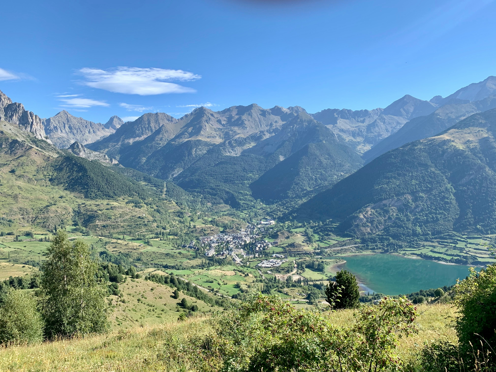

MAY 10, 2026
Freedom Found Far From Home 🌍
Traveling solo is one of the most rewarding experiences I have ever had. There is something incredibly empowering about stepping into a new place completely on your own and realizing that every decision is yours to make ✨

JULY 23, 2022
A Journey Through the Heart of Thailand
Thailand was one of those trips that felt like five different adventures combined into one. Every destination had its own personality, atmosphere, and rhythm, which made the entire journey unforgettable.

JULY 23, 2022
Breathing Underwater in Phi Phi
Scuba diving in Phi Phi was one of the most exciting and unforgettable things I have ever done. Before getting into the water, I felt a mix of excitement and nervousness.

JULY 23, 2022
Where the Mountains Reset Your Mind
My trip to the Pyrenees was exactly what I needed. After spending so much time in busy cities and fast paced environments, being surrounded by mountains felt like hitting a reset button.
JULY 23, 2022
The Magic of the Scottish Highlands
The Highlands felt like stepping into another world. From the moment I arrived, the landscapes were dramatic, wild, and almost unreal.

JULY 23, 2022
The Beauty of Traveling Slowly
Not every travel memory comes from famous landmarks or major adventures. Some of my favorite moments while traveling solo are actually the simplest ones.
JULY 23, 2022
Feeling at Home Anywhere
One of the greatest lessons traveling solo has taught me is adaptability. The more I traveled alone, the more comfortable I became with uncertainty.